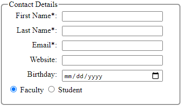

Weipeng's Log Book
Week 1
- May 21, 2020
- Finished project webpage framework
- Finished github set up
- May 22, 2020
- Set up Nucleo board for programming
- Can't set up Atollic, switch to CubeIDE
- Encounter "GDB server" error. Solved by switch power source to ST-link
- May 23, 2020
- continue on Nucleo board programming
- code can be complied and uploaded successfully, when push blue button, difficult to tell if it's triggered because of reciving message
- need to figure out a way to verify message is actually received
- try to work with external button and LEDs
- Buttons are set to active low by default
- Blue Button is PC13
- Pinout Map
| Floor |
Button |
LED |
| 1 |
PC13 |
PA5 |
| 2 |
PC12 |
PA6 |
| 3 |
PC11 |
PA7 |
- set EXIT15_10_IRQHandler() to check which line flag is set, then pass the pin to HAL_GPIO_EXTI_IQRHandler()
- According to the passed-in pin, HAL_GPIO_EXTI_Callback() will set different button flag
- In main function, will send out different floor message according to button flags
- Set up filter
- Assume need to accept ID 0x100 to 0x103
- Set filter.FilterIdHight to 0x0100<<5 (shift 5 digit to 5 because standard ID only has 11 digits)
- Set filter.FilterMaskIdHigh to 0xFF80 (for the 11-digit ID, the left 9 digits have to exact match)
- set sender ID to 0x100 ~ 0x103, the LEDs works properly
- set sender ID to 0x104, the LED does not respond. Filter works properly
Week 2
- May 25, 2020
- Nucleo64 CAN demo wiring diagram

- May 28, 2020
- Update Project Webpage
- Added meta tags
- Added login and request access pages
- Added google map iframe
- May 29, 2020
- Transfer Nishant's finite state machine logic from word to html
- Add basic states diagram and target setting algorithm
Week 3
- June 1, 2020
- Create weekly status report for week 2
- Improve status report page
- Remake resume. The current resume style is not attractive and lack key skill information. Will need to find a good format and fill in skills
- June 2, 2020
- Remake cover letter. The current cover letter lacks the introduction of the school program. Will add a paragraph for it
- Prepare for data com quiz 1
- June 3, 2020
- Prepare for math quiz 2
- Finished math assignment 6. Not sure if using F or f to do the calculate
- June 4, 2020
- Watched Natural Science week 3 lecture 2 part A (part B is not available yet, need to find a time to finish it)
- After discuss the math assignment with Eduard, found my way to do assignment 6 is wrong. For assignment 6b, seems we still lack some knowledge
- Worked on project login and request_access pages. Now the input boxes are aligned

- Add copyright footers to each page
- Finished software assignment#1 Q14-a. Will continue to work on Q14-b
- June 5, 2020
- finished software assignment#1 Q14-b. Will need someone to review the page
Copyright © 2020 Eduard Nishant Ramtin Weipeng